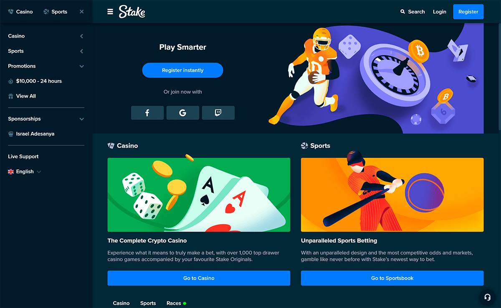

Wie man im Bitcoin Casino mit Bitcoin spielt

Sie werden feststellen, dass immer mehr Online-Glücksspielseiten Bitcoin und andere Kryptowährungen akzeptieren. Das liegt daran, dass Bitcoin Casino Glücksspiele sehr lukrativ sind und viele bessere Eigenschaften als herkömmliche Online-Glücksspiele haben.
Das Glücksspiel mit Bitcoin Casino bietet ein hohes Maß an Sicherheit, da Sie Ihre Kredit- oder Debitkartendaten nicht an Online-Glücksspielseiten weitergeben müssen. Außerdem ist es möglich, von überall auf der Welt auf Krypto-Glücksspiele zuzugreifen.
Ein weiterer Vorteil von Krypto-Glücksspielen ist, dass Sie sich Ihre Gewinne viel schneller auszahlen lassen können.
Nachdem Sie gewonnen haben, kann der Bitcoin Casino Verzögerung direkt an Ihre Brieftasche geschickt werden. Die Transaktionen werden über Peer-to-Peer-Verfahren abgewickelt, was bedeutet, dass Banken und Kreditkartenunternehmen die Zahlungen nicht verfolgen oder verlangsamen.
Es mag einschüchternd erscheinen, zu einer anderen Währung zu wechseln, wenn Sie mit Fiat-Währungen wie Dollar oder Euro vertraut sind.
Krypto-Glücksspiel-Anreize wie der Bitcoin-Bonus von Bovada bieten verlockende Möglichkeiten zur Maximierung der Belohnungen. Der Einstieg ist ganz einfach – sobald Sie etwas Bitcoin gekauft und in Ihre Brieftasche gesteckt haben, müssen Sie sich nur noch bei dem von Ihnen Bitcoin Casino anmelden und mit dem Spielen beginnen.
In diesem Artikel werden die Schritte beschrieben, die Ihnen den Einstieg in die Nutzung von Bitcoin in Bitcoin Casino erleichtern
Wie man in Bitcoin Casino spielen kann
Es gibt eine Reihe von Schritten, die Sie unternehmen müssen, bevor Sie mit dem Spielen in stake casino beginnen können. Zunächst müssen Sie ein Casino finden, das Bitcoin-Zahlungen akzeptiert. Es stake casino, die Bitcoin nicht als Zahlungsmittel akzeptieren.
Der nächste Schritt besteht darin, sich bei dem Casino zu registrieren, um ein Konto zu erhalten. Dann suchen Sie sich einen Ort, an dem Sie Bitcoins kaufen und verkaufen können.
Wenn Sie diese Bitcoins bereits haben, können Sie sie aufbewahren, während Sie darauf warten, sie im stake casino zu verwenden. Wählen Sie dann die Einzahlungsoption auf dem Einsatz Bitcoin Casino.
Navigieren Sie zum Kassenbereich, um eine Bitcoin Casino vorzunehmen. Sobald das Bitcoin-Kasino Ihre Einzahlung genehmigt hat, können Sie mit Ihrem Lieblingsspiel in einem Bitcoin Casino beginnen.
Bitcoin kaufen
Kaufen Sie Bitcoin, um damit zu spielen. Websites wie Coinbase und Binance sind großartige und vertrauenswürdige Deshalb Kryptowährungsbörsen, die Anfänger willkommen heißen. Gehen Sie auf eine dieser Websites und folgen Sie dem Anmeldeprozess.
Nachdem Sie ein Konto erstellt und die erforderlichen Daten eingegeben haben, können Sie Kryptowährungen wie Bitcoin ganz einfach mit Ihrer Kredit- oder Debitkarte kaufen. Klicken Sie auf „Bezahlen“ und die Kryptowährung wird auf Ihrem Tauschkonto landen.
Senden Sie den Bitcoin an Ihre Brieftasche
Dies ist ein wichtiger Schritt, bevor Sie auf Online-Glücksspiele zugreifen können. Die Bitcoin müssen von der Börse in Ihren privaten Speicher übertragen werden. Sie können dies tun, indem Sie die Anweisungen auf der Website einer Börse befolgen.
Dort finden Sie eine Option zum Senden und Empfangen von Kryptowährungen. Wählen Sie die Währung, die Sie senden möchten – in diesem Fall BTC -, fügen Sie Ihre Wallet-Adresse hinzu und klicken Sie auf „Senden“.
Wählen Sie ein Bitcoin Casino
Sie sind fast am Ziel! Der letzte Schritt, bevor Sie anfangen zu spielen, ist die Wahl des Bitcoin Casino, in dem Sie spielen möchten. Es wird sicherlich eines geben, das all Ihren Bedürfnissen entspricht.
Bei der Auswahl eines Blockchain-Einsatz stake casino gibt es einige Faktoren zu beachten. Zum Beispiel muss das Einsatz Casino Spiele haben, die Sie gerne spielen. Außerdem sollten Sie sich überlegen, ob Sie auf Ihrem Smartphone oder Ihrem Computer spielen möchten.
Achten Sie auf Dinge wie Kundensupport, Rentabilität, Gerätekompatibilität und die Möglichkeit, Boni zu erhalten. Vergewissern Sie sich, dass Sie sich auf einer Krypto-Casino-Website wohlfühlen, bevor Sie sich anmelden und zu spielen beginnen.
Sammeln Sie Ihre Gewinne
Wir alle wissen, dass die Abholung Ihrer hart verdienten Gewinne der aufregendste Teil des Spiels ist. Nachdem Sie gewonnen haben, müssen Sie den Auszahlungsprozess durchlaufen, Weil um Ihre Gewinne zu erhalten. Das stake casino wird Sie durch diesen Prozess leiten.
Die Gelder werden zunächst auf Ihre Krypto-Brieftasche übertragen. Danach liegt es an Ihnen, was Sie damit machen. „können Bitcoin auch für Einkäufe“ oder als „alternative Investition“ verwenden, erklärt Forbes.
Sie können das Geld wieder in Fiat-Währung umwandeln und es dann auf Ihr Bankkonto überweisen. können Ihre Bitcoin Casino für Online-Einkäufe ausgeben oder noch mehr in Online-Casinos spielen.
Was sind die Vor- und Nachteile von Bitcoin Casinos?
Laut Einsatz Casino gibt es viele Vor- und Nachteile beim Glücksspiel mit Kryptowährungen:
Bitcoin Casino Vorteile:
- Bitcoin Casinos sind dafür bekannt, dass sie großzügig mit ihren Boni und Werbeaktionen sind. (Einige stake casino bieten spezielle Boni für Bitcoin-Nutzer an.)
- Transaktionen mit Bitcoin sind im Vergleich zu traditionellen Währungen viel schneller.
- Die meisten Spieler lieben stake casino, weil sie ein gewisses Maß an Anonymität bieten. können Transaktionen inkognito durchgeführt werden.
- Sicherheit Die Verschlüsselung macht Bitcoin zu einer sicheren Sache für Spieler. Im Vergleich zu Weil anderen Zahlungsmitteln
- Niedrige Gebühren. Da es keine Zwischenhändler wie Banken gibt, ist Bitcoin eine billigere Art zu spielen.
Bitcoin Casino Nachteile:
- Geringere Regulierung Da an den Transaktionen keine staatlichen Stellen beteiligt sind, können Sie bei der Verwendung von Bitcoin eine Rückbuchung erhalten.
- Ungewissheit über die Sicherheit digitaler Währungen.
- Es gibt auch die Tatsache, dass der Wert von Bitcoin Casino oder fallen kann, was sich auf Ihre Abhebungen und Einzahlungen auswirken kann.
Ist Stake ein gutes Casino?
Ja, Stake Casino ist eines der seriösesten Casinos heute, um eine zuverlässige Glücksspielerfahrung online zu haben und ist auf keinen Fall ein Betrug. Außerdem sind die meisten Stake Spiele nachweislich fair, um zufällige Ergebnisse zu gewährleisten.
Kann man bei Stake echtes Geld bekommen?
Wir möchten Sie noch einmal daran erinnern, dass hier keine Einzahlungen oder Abhebungen vorgenommen werden können, da Stake ein soziales Casino und kein Echtgeld-Glücksspiel-Casino oder eine Wettseite ist.